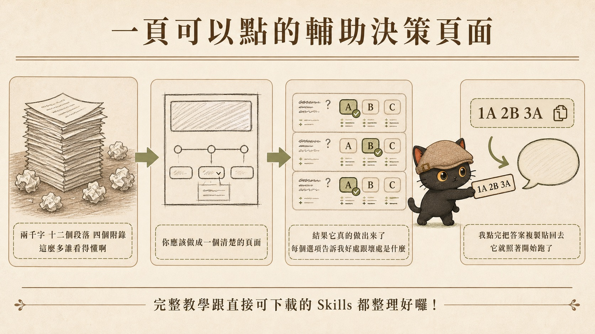
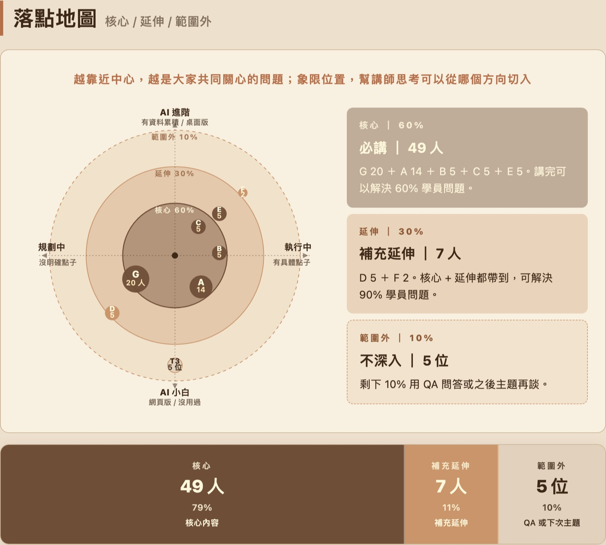
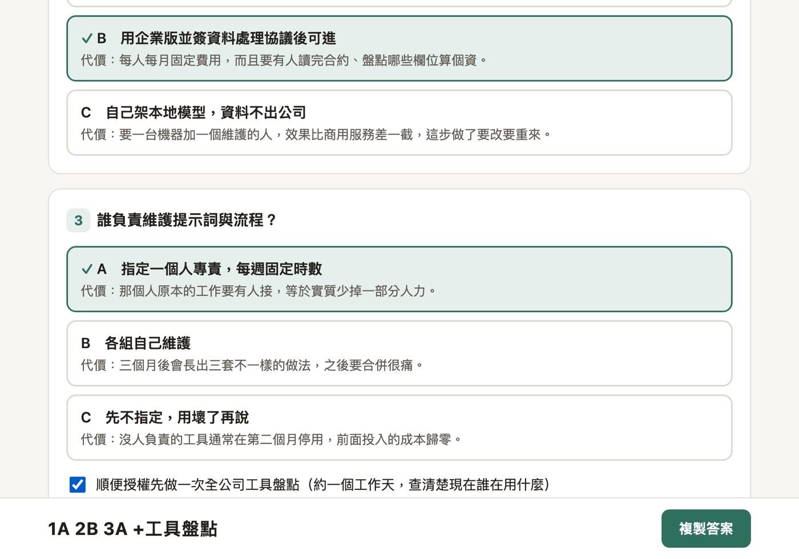

AI 回答越來越完整，也越來越長。條件、例外、風險、前提全都寫進去，看起來很負責，讀起來卻很累。我的做法很簡單：第一層，請 AI 用白話重講。第二層，請 AI 畫成流程圖。第三層，資訊量真的太大時，請 AI 做成網頁。第三層要再分兩種：說明網頁負責讓你看懂，決策網頁負責讓你拍板，後者我整理成免費技能包開源了。這篇會把每一層的使用時機、提示詞和核對方法整理出來。
- 每天收到 AI 長篇回答，常常看到一半就放棄的人
- 要把 AI 的分析拿去開會、報價、決策或交件的人
- 每一句都看得懂，卻抓不到整體關係的人
- 一套判斷順序：先讓內容變白話，再讓關係變成圖，最後才把大量資訊做成說明網頁
- 四段可直接複製的提示詞（白話重講、流程圖、說明網頁、輔助決策）
- 圖做完之後回頭核對的三個問題

一、為什麼「看不下去」是一個工作風險
AI 的長回答通常不是故意囉嗦。它會把條件、例外、推論、風險和補充說明都放進去，篇幅自然變長。
真正麻煩的是，重要內容常常藏在中後段。例如：
- 這個建議適用在什麼條件下
- 哪些情況要例外處理
- 哪些結論是根據資料直接整理出來的
- 哪些判斷是 AI 自己推論的
- 哪些部分需要人工再確認
人一累，最容易跳過的剛好就是這些內容。跳過之後，表面上你已經看完了，實際上你只是讓沒有被理解的前提進入下一步。
二、三層理解法：先白話，再流程圖，再做成網頁
我通常用這個順序處理長回答。下面三張卡片可以點開，看該層的使用時機與判斷標準，再點一次收起來。
用在內容很長、術語很多、句子很密，但邏輯是一條直線的時候。白話版至少要講清楚結論、理由與限制三件事。
判斷標準：你能不能用自己的話講給同事聽。講不出來，就還沒有到可以拍板的程度。
看完整說明與提示詞 ↓用在每一句都看得懂，整體關係仍然不清楚的時候。觸發條件：流程超過三個步驟、中間有判斷分支、不同角色各自負責不同事情、執行順序會影響結果、前面的選擇會改變後面的路線。
判斷標準：能不能講出起點、終點和分支。
看完整說明與提示詞 ↓用在內容同時有很多區塊、很多細節，而且之後還需要反覆查看的時候。這一層要再分兩種，用途不一樣。
說明網頁：把大量資料變成看得懂的圖表和結構。判斷標準是需不需要先看全景再挖細節。
決策網頁：把要你拍板的分岔口變成可以點的選項，點完複製答案貼回對話。判斷標準是能不能講出到底有幾件事在等你決定。
看說明網頁 ↓ 看輔助決策 ↓三層不用每次都跑完。很多內容做到第一層就夠。第二層用來看關係。第三層留給真的複雜、需要留存和反覆查找的內容。
三、第一層：請 AI 用白話重新講一次
第一層最常用，也最省力。
當你覺得內容太長、術語太多、句子太密時，先不要急著整理成圖。請 AI 先用白話重講。目標是讓你真的理解它在說什麼，變短只是順帶的結果。
白話版至少要講清楚三件事：
它建議怎麼做
為什麼這樣做
哪些情況不適用，哪些前提要先成立
判斷自己有沒有看懂，可以用一個簡單標準：你能不能用自己的話講給同事聽。講不出來，就還沒有到可以拍板的程度。
白話重講提示詞
請把上面的內容用白話重新講一次
請遵守這些規則
1 先講結論 再講理由 最後講限制與例外
2 不要使用專業術語 如果必須使用 請先用一句話解釋
3 明確標出哪些是資料裡直接寫的 哪些是你根據資料推論的
4 如果原文有前提條件 請單獨列出來 不要混在敘述裡
5 請保留重要條件 不要為了變短就刪掉限制
最後請用三句話總結
如果我看不懂 我會繼續追問這段提示詞的重點，是不要只叫 AI「幫我簡化」。簡化很容易把重要條件砍掉。你要它做的是換成白話，同時保留限制與例外。
四、第二層：請 AI 畫成流程圖
有些內容用白話重講之後，每一句都看得懂，但整體關係仍然不清楚。這通常是結構問題，語言本身已經沒有障礙了。
遇到下面幾種情況，我會請 AI 畫成流程圖：
- 流程超過三個步驟
- 中間有判斷分支
- 不同角色各自負責不同事情
- 執行順序會影響結果
- 前面的選擇會改變後面的路線
流程圖的價值，是把「接下來要怎麼走」看清楚。文字需要一段一段讀，流程圖可以讓你先看到起點、終點、分支和回頭路。
在 Codex 的對談介面裡，可以直接請它整理 Mermaid 流程圖。適合用在「先把步驟和判斷關係看懂」的場合。
我會請它先標出起點、步驟、判斷條件、分支、回頭路線和待確認事項。圖畫出來之後，再請它用幾句白話解釋整張圖。
Claude 可以用 show_widget 做 inline SVG。這條路徑適合需要控制造型、位置、顏色與版面細節的情境。
SVG 的彈性比較高，但也需要模型處理節點座標、方框大小、箭頭和連線位置。流程越複雜，越需要調整。
若只是要快速看懂流程，我會先用 Mermaid；若需要更細緻的視覺呈現，再考慮 SVG Widget。
流程圖提示詞
請把剛才的內容整理成流程圖
請清楚標示
1 起點與終點
2 每個步驟
3 判斷條件
4 分支路線
5 回頭修正的路線
6 尚未確認的部分
請先畫圖
畫完後再用五句白話解釋整張圖
並提醒我哪些地方需要回原文核對如果你使用 Codex，可以加上「請用 Mermaid」。如果你使用 Claude，可以加上「請使用 show_widget 製作 inline SVG」。
五、第三層之一：說明網頁
做成網頁其實有兩種，用途不一樣，不要混在一起。
一種是呈現：把大量資料變成看得懂的圖表和結構，你讀完就知道發生什麼事。另一種是決定：把要你拍板的分岔口變成可以點的選項，點完複製答案貼回對話，就繼續往下做。
前者解決「我看不懂」，後者解決「我不知道怎麼選」。這一節講第一種，下一節講第二種。
流程圖解決的是關係，但它不一定能處理大量資訊。
當內容同時有很多區塊、很多細節，而且之後還需要反覆查看時，我會請 AI 做成一頁說明網頁。
適合做成這種網頁的情況包括：
- 一張流程圖已經塞不下
- 前面看完，後面就忘了
- 需要先看總覽，再逐步展開細節
- 不同角色只需要看自己相關的部分
- 這份內容之後還會被拿來查詢、教學或交接

這種網頁的重點是降低理解成本，好不好看是其次。第一眼先看到整體脈絡，接著可以點開細節，看完再回到總覽。
這一層很容易做歪。常見問題是這四種：
資訊沒變少，只是換了外觀
段落變碎片，關係還是看不到
全部攤開，等於沒有收放
好看，但回答不了任何問題
這些做法看起來有整理，讀者要花的力氣其實沒有少多少。
真正有用的說明網頁，應該讓讀者知道五件事各在哪裡：結論、關係、風險、證據、待確認事項。
說明網頁提示詞
請把上面的內容做成一頁說明網頁
第一個畫面要先呈現整體脈絡
包含這份內容在解決什麼問題 主要區塊有哪些 以及結論是什麼
互動要求
1 點擊或輕觸可以展開細節
2 展開後可以回到總覽
3 手機與電腦都要能操作
4 重要資訊不可以只靠滑鼠懸停才看得到
內容要求
1 標示哪些是已確認的事實
2 標示哪些是推測
3 標示哪些還要人工確認
4 有流程或分支的地方請畫成圖
5 沒有真實數字就不要畫圖表 不要自己編數字
請不要只是換字體 重排段落 或切成一堆卡片
目標是讓我第一眼看懂大脈絡 再依需求查看細節我自己會提這個要求，還有一個現實原因。如果已經在使用高階 AI 工具，遇到真正複雜的內容時，我會期待它提供適合閱讀和決策的呈現方式，而不只是把文字重新排版。
常有人問：做成網頁不是很浪費 token 嗎
常見的說法是，同一份內容用 Markdown 最省，做成 HTML 要多好幾倍，所以能用 Markdown 就別做網頁。
這個說法有根據。Cloudflare 官方拿自己一篇部落格測過：HTML 版 16,180 個 token，換成 Markdown 是 3,150 個，少了八成。
但倍數要看情況。公開測試從 1.77 倍到 16.9 倍都有：
| 測的是什麼 | HTML 是 Markdown 的幾倍 |
|---|---|
| 乾淨的最小化 HTML（OpenAI 社群） | 1.77 倍 |
| 模擬 CMS 版面，含 class 與 aria（FormatArc） | 約 3.4 倍 |
| 整頁網頁清成 Markdown（Cloudflare） | 約 5.1 倍 |
| 20 個真實網頁（MDisBetter） | 3.4 到 16.9 倍 |
抓個大概，平均四五倍。差在 HTML 裡塞了多少 class、樣式和導航。
而且如果版型是現成的，AI 不用從零想版面，只要把定稿填進骨架，多花的比這個數字還少。
更重要的是，那些測試量的是把網頁抓下來餵給 AI。這篇講的是請 AI 做一頁給人看。兩件事。
所以我不太在意多的那幾千個 token。真正稀缺的不是它。
一份東西讓你少花二十分鐘搞懂、少一次看不下去就放棄，省下的是你的時間，更重要的是你的注意力。專注力才是最貴的東西，不要花在硬讀一份不適合閱讀的內容上。
六、第三層之二：決策網頁
有時候那份長內容不只是要你看懂，而是要你拍板。方案有 A 有 B，顧問給了建議書，AI 給了完整分析，最後那句話是「你要選哪一個」。
這種時候，光是能點開細節還不夠。你需要知道到底有幾件事在等你決定。
我後來發現一件事：AI 分析得越完整，人越難決定。兩千字的方案裡，真正需要你拍板的通常只有三到五個分岔口，其他都是背景。但它們全部混在一起，你得讀完才知道哪裡要你出手。
所以我把這種頁面固定成一個版型，自己用了大半年。做法是把那三到五個分岔口抽出來，每題配上選項，每個選項配一句代價，做成一頁可以點的網頁。點完之後底部會即時組出一串答案，像 1A 2B 3A，按一下複製，貼回對話，AI 就照著往下做。
決定就從「讀完兩千字再說」變成「三分鐘點完」。

1A 2B 3A。按複製貼回對話，AI 照著往下做。注意每個選項下面那一行寫的是代價，不是好處。三條最容易做錯的
第一，代價寫的是代價，不是好處。
好的代價長這樣：「要多花兩週，而且上線後三個月內不能再改結構。」
壞的代價長這樣：「這個做法比較彈性，長期來看更好維護。」
人在看好處時會被說服，看代價時才會思考。代價寫不出來，通常代表那還不是一個真的選項。
第二，不要讓 AI 預選，也不要標「建議」。
頁面打開時答案應該全空。AI 的推薦意見留在對話裡講就好，烙進頁面就變成默示同意，你會不自覺照著它排的順序選。
第三，選項要中立對稱。
長度、詳細度、語氣、順序四個維度都要對齊。一個選項寫三行、另一個寫一行，等於偷偷幫你選好了。
簡化不能砍掉的五件事
把長方案壓成一頁，代價是資訊被拿掉。所以要先講死哪些永遠不能拿掉：
- 不可逆性：這個選擇之後改不改得回來
- 金錢與時間成本：要花多少、誰來出
- 風險與副作用：可能出什麼事、會影響到誰
- 前提假設：建立在什麼假設上，假設不成立會怎樣
- 被排除的選項：AI 幫你收掉的做法要列出來，並寫一句為什麼
這五項可以濃縮成一句話，但不能整段消失。頁面短是為了好決定，不是為了讓你在不知情的狀況下按下去。
決策網頁提示詞
上面這份方案我看不完 請幫我做成一頁可以拍板的網頁
第一步 先不要做網頁
請先列出這份方案裡真正需要我決定的地方
判準是 你沒有立場替我決定的才算
可逆而且成本低的你自己判斷就好 不要拿來問我
列完先唸給我聽 我確認題目對了才做網頁
第二步 做成單一 HTML 檔
1 每題一張卡 選項是大按鈕 手機點得到
2 每個選項配一句代價 寫選了要付出什麼 不寫好處
3 不要預選任何選項 不要標建議或推薦
4 選項的長度 詳細度 語氣要對齊
5 底部固定一條答案列 即時組出像 1A 2B 3A 的答案串 加一顆複製鈕
6 CSS 與 JS 內嵌 不要連外部資源 我要能離線開
第三步 這五件事一定要在頁面上找得到
不可逆性 金錢與時間成本 風險與副作用 前提假設 被你排除的選項
做完告訴我你自己判斷掉了哪幾件 讓我有機會推翻提示詞裡最重要的是第一步。做網頁的成本是排版，抽題的成本是整件事的方向，順序反了就是拿貴的東西賭便宜的東西。題目抽錯，版面做得再漂亮也只是好看的錯誤。
這套做法我開源了
版型、抽決策點的方法、空白模板，我整理成一個免費技能包放在 GitHub，MIT 授權，拿去用、拿去改、拿去商用都不用問我。
- 說明頁：jiang-yude.github.io/decision-support-page
- 可以直接點的示範頁：demo.html
- GitHub：Jiang-Yude/decision-support-page
示範頁可以直接點，點完就知道答案串是什麼意思。想自己做的話，把技能包裡的 SKILL.md 貼給你的 AI 助理，然後說「我剛剛那個方案太複雜了，用輔助決策頁的做法幫我整理成一頁」就會跑。
我不敢說這是誰先想到的，只是我把它整理成一套固定可重複的機制，用了大半年之後把它開源出來。
七、圖畫得清楚，內容仍然要核對
白話、流程圖和兩種網頁都會讓內容看起來更清楚。清楚是好事，但也會帶來一個風險：形式越清楚，人越容易以為內容已經確認。
AI 在把文字變成圖或網頁時，一定會做取捨。原文寫「通常會」「可能需要」「視情況而定」，到了圖上可能變成一個方框或一條箭頭。原文裡的推測和原文裡已確認的事實，在圖上可能長得一樣。
所以圖或網頁做完後，我會回頭問三個問題：
- 這裡哪些內容是原文有的，哪些是你補上的
- 哪些地方原文沒有講清楚，是你自己做了判斷
- 有沒有數字、日期、名稱或順序是你推論出來的
要特別留意兩件事。第一，原文寫「可能」的地方，圖上有沒有被畫成確定路線。第二，原文沒有講執行順序的地方，圖上有沒有被排出先後。
八、什麼情況用哪一層
| 內容狀況 | 建議做法 | 判斷標準 |
|---|---|---|
| 內容很長、術語很多、邏輯是直線的 | 用白話重講 | 能不能用自己的話講給同事聽 |
| 有步驟、分支、角色或時間順序 | 畫成流程圖 | 能不能講出起點、終點和分支 |
| 資訊量大、需要反覆查、細節要收放 | 做成說明網頁 | 需不需要先看全景再挖細節 |
| 要你在幾個做法之間拍板 | 做成決策網頁 | 能不能講出到底有幾件事在等你決定 |
| 會影響決策、金額或對外交付 | 做完後回原文核對 | 哪些是原文有的，哪些是 AI 補的 |
簡單說：白話處理語言，流程圖處理關係，說明網頁處理資訊量，決策網頁處理分岔口。最後的核對，處理的是可信度。
九、一個可以直接照做的工作流
下次遇到很長的 AI 回答，可以照這個順序做：
- 先問：請用白話重講，保留限制與例外
- 再問：如果有流程、角色或判斷分支，請畫成流程圖
- 如果內容太大，再問：請做成可點開細節的一頁說明網頁
- 如果那份內容是要你拍板的，再問：請先列出真正要我決定的地方，我確認題目對了再做成決策網頁
- 最後問：哪些是原文有的，哪些是你補的，哪些需要人工確認
這樣做的目的是讓你真的有能力判斷它。包裝得好看只是副作用。
「好好，都可以」這句話本身沒有問題。前提是，你真的看懂了才說。
隱性知識提煉師、AI 應用規劃師。
我長期研究 AI × 知識管理、隱性知識提煉與 AI 工作流設計。我每月固定舉辦兩場免費線上講座，分享實戰經驗與方法論。你可以從社群開始，持續收到 AI 應用、知識管理和提示詞設計相關內容。
主要討論：善用 AI 作為思考夥伴，提升決策品質與思考深度；把知識、經驗，整理成提示詞、技能包、知識庫，讓 AI 能靈活運用。